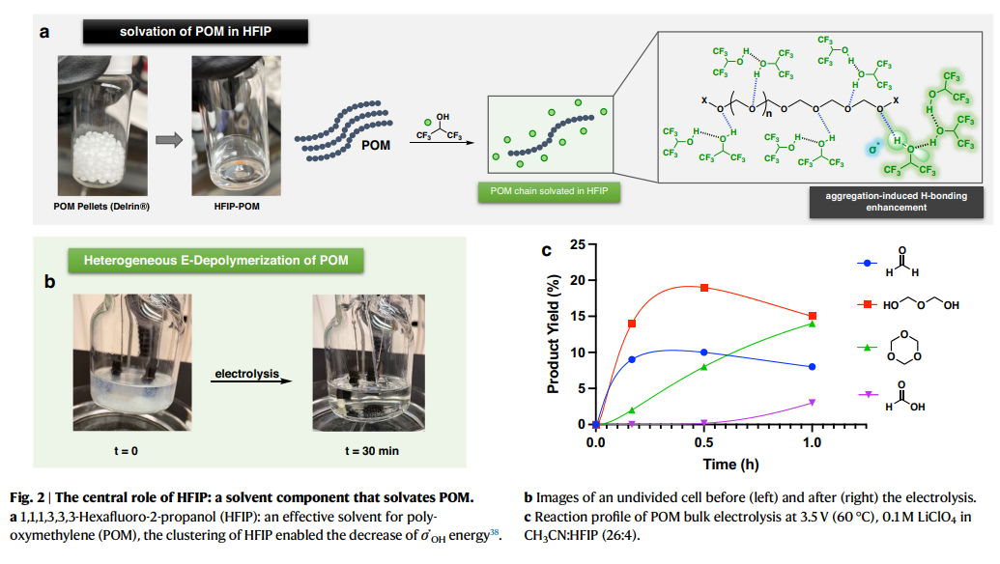
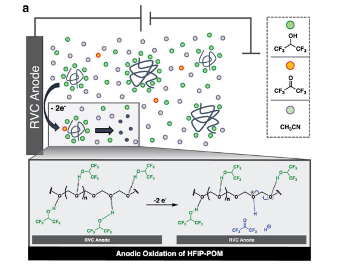

狙い
循環性の考えは、持続可能な材料管理とリソースの最適利用に焦点を当てたアプローチです。線形経済（「採掘、製造、使用、廃棄」）とは対照的に、循環経済では材料がエンド・オブ・ライフに達した後も再利用、再生、リサイクルされ、無駄を最小限に抑えます。循環性の材料（Circular Materials）は、生産から消費、そして再生に至るまでのライフサイクル全体で環境影響が最小限であるように設計された材料です。これには、リサイクル性、再利用性、耐久性、修理性、そして生物分解性などの特性が含まれます。
論文タイトル一覧
1. 高結晶性ポリオキシメチレンの不均一電気媒介分解
・高結晶性のエンジニアリングプラスチックであるポリオキシメチレン（POM）を室温と常圧で電気抵抗がなくなる物質に分解する電気化学的方法を開発した。
・ヘキサフルオロ-2-プロパノール（HFIP）を溶媒として用いることで、POMの溶解と酸化によるプロトン発生を同時に促進した。
・電気生成されたプロトンがPOMのアセタール結合を切断し、ホルムアルデヒドや1,3,5-トリオキサンなどのモノマーに還元した。
・電気生成された酸素がモノマーを酸化し、最終的にはホルム酸に変換し、商業的なPOM製品（デルリン®）も同様の方法で分解できることを示した。
・ヘキサフルオロ-2-プロパノール（HFIP）を溶媒として用いることで、POMの溶解と酸化によるプロトン発生を同時に促進した。
・電気生成されたプロトンがPOMのアセタール結合を切断し、ホルムアルデヒドや1,3,5-トリオキサンなどのモノマーに還元した。
・電気生成された酸素がモノマーを酸化し、最終的にはホルム酸に変換し、商業的なPOM製品（デルリン®）も同様の方法で分解できることを示した。
コメント：実際に製品化されているプラスチックの一つPOMを分解できる手法の確立したとして高く評価されているようである。リサイクルに関する考察には触れていないようなので、そのあたりの議論についても勉強していきたい。
用語：ポリオキシメチレン（POM）：オキシメチレン（−CH2O−）構造を単位構造にもつポリマーであり、高い機械的強度や耐摩耗性を持つ。自動車や電子機器などの精密部品に広く利用される。デルリンは、ポリオキシメチレンの一種であり、ホルムアルデヒドを原料としたポリアセタール樹脂（POM）です。電気媒介分解：電気化学的な反応によって高分子や有機物を低分子や無機物に分解すること。電極表面で発生する電子やプロトン、酸素などの活性種が分解反応を促進する。ヘキサフルオロ-2-プロパノール（HFIP）：強い水素結合性と低い極性を持つ有機溶媒であり、高結晶性のポリマーを溶解する能力がある。また、酸化によってプロトンを発生させることができる。 方法論：POMの電気媒介分解方法：POM粉末をHFIPに溶かし、その溶液をCH3CNやIPAなどの他の有機溶媒に加えて不均一系の電解液を作った。この電解液を分割セルまたは非分割セルに入れ、銀/塩化銀電極（Ag/AgCl）を基準電極として用いた。ガラス炭素電極や金属電極などの作業電極に2～3.5 Vの電圧を印加し、数時間から数十分間電気化学反応させた。反応後の電解液から生成物を回収し、1H NMRや19F NMRなどの分析手法で同定した。
用語：ポリオキシメチレン（POM）：オキシメチレン（−CH2O−）構造を単位構造にもつポリマーであり、高い機械的強度や耐摩耗性を持つ。自動車や電子機器などの精密部品に広く利用される。デルリンは、ポリオキシメチレンの一種であり、ホルムアルデヒドを原料としたポリアセタール樹脂（POM）です。電気媒介分解：電気化学的な反応によって高分子や有機物を低分子や無機物に分解すること。電極表面で発生する電子やプロトン、酸素などの活性種が分解反応を促進する。ヘキサフルオロ-2-プロパノール（HFIP）：強い水素結合性と低い極性を持つ有機溶媒であり、高結晶性のポリマーを溶解する能力がある。また、酸化によってプロトンを発生させることができる。 方法論：POMの電気媒介分解方法：POM粉末をHFIPに溶かし、その溶液をCH3CNやIPAなどの他の有機溶媒に加えて不均一系の電解液を作った。この電解液を分割セルまたは非分割セルに入れ、銀/塩化銀電極（Ag/AgCl）を基準電極として用いた。ガラス炭素電極や金属電極などの作業電極に2～3.5 Vの電圧を印加し、数時間から数十分間電気化学反応させた。反応後の電解液から生成物を回収し、1H NMRや19F NMRなどの分析手法で同定した。
11 Aug 2023
Heterogeneous electromediated depolymerization of highly crystalline polyoxymethylene
Yuting Zhou, et al. (University of Illinois at Urbana-Champaign, USA)
Nature Communications volume 14, 4847 (2023)
Heterogeneous electromediated depolymerization of highly crystalline polyoxymethylene
Yuting Zhou, et al. (University of Illinois at Urbana-Champaign, USA)
Nature Communications volume 14, 4847 (2023)

